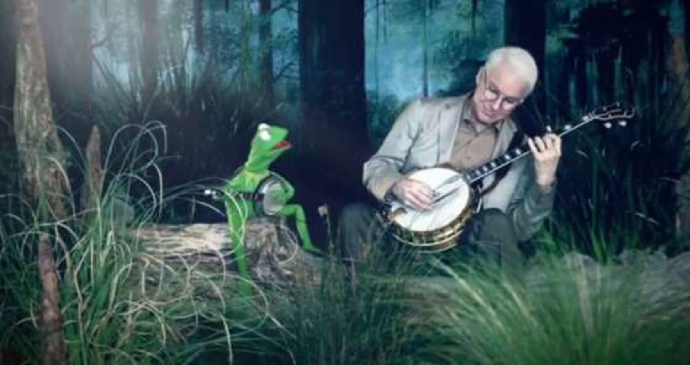
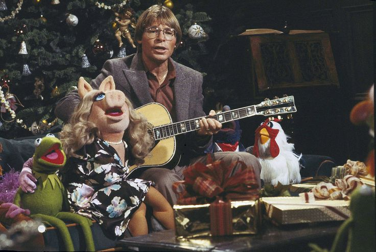
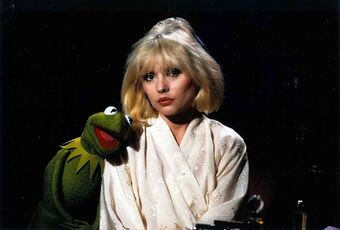
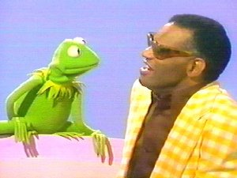
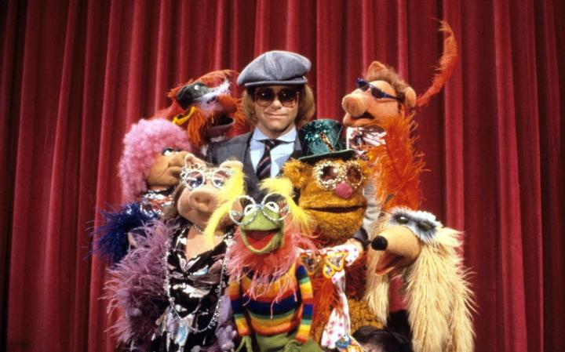

Kermit performed the hit singles "Bein' Green" in 1970 and "The Rainbow Connection" in 1979 for The Muppet Movie, the first feature-length film featuring the Muppets. "The Rainbow Connection" reached No. 25 on the Billboard Hot 100. Kermit's iconic look and voice have been recognizable worldwide since, and in 2006, the character was credited as the author of Before You Leap: A Frog's Eye View of Life's Greatest Lessons, an autobiography told from the perspective of Kermit himself.
Kermit has preformed with many of his friends from The Street,
as well as some other very well-known artists:
| Steve Martin (Battle Of The Banjos) |
John Denver (The Peace Carol) |
Debbie Harry (Rainbow Connection) |
Ray Charles (Bein' Green) |
Elton John (Bennie And The Jets) |
|  |  |  |  |  |